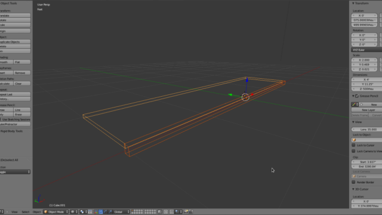
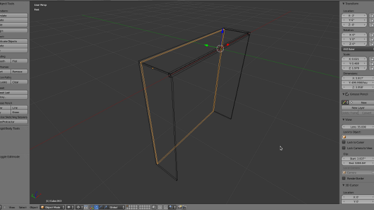

In this tutorial, some techniques for manipulating the size and location of objects will be demonstrated in the course of building a bookshelf. It requires no previous knowledge of blender.

For the initial setup, blender is configured just like it would be if had been just installed. If any settings have been changed, just go to "file">"Load Factory Settings". This will bring blender back from the brink even if the startup file gets overwritten with garbage.
As for useful keyboard shortcuts to know before beginning, spacebar and control-z make life much easier. If any particular menu item or button can't be found, press the spacebar. This brings up a context-sensitive search window that will display possible operations. For example, if "snap cursor to selected" can't be found or the keyboard shortcut can't be remembered, type "cursor" into the search field and it can easily be found it the resulting list. Control-z is there to undo anything that is done in the course of manipulating the scene.

The first thing to do is to change the units blender uses to Imperial since the tutorial uses inches for all the lengths. Sorry rest-of-the-world. The properties window is on the lower right hand side of the screen. It has a number of icons across the top of it. The first one is used to select what kind of window it is. The other icons are used to select which subset of properties are being displayed, called a context. Click the third icon from the left; it has 3 shapes on it. This is the scene context. Down in the units section, change the selection from "None" to "Imperial".

In the 3D window, there is a plus sign in the upper right corner. Clicking it will open the properties panel. Notice the difference between the properties panel, which was just opened, and the properties window, which is where the unit type was selected. Pressing n in the 3D window will also open and close the panel.
The scene should already have a cube in it and it should already be selected. If it isn't, select it using the right mouse button.

In the properties panel, there is a subset titled "Transform". The properties at the bottom of the set describe the width, length, and height of the object. When they are manipulated, they affect the scale of the object to match the dimensions. Math can be performed within these fields. Type 4'+(1/8)" into the x dimension. This becomes 4.01' once enter is pressed. Change the y dimension to 0.75", and the z dimension to 1".
Scroll the mouse wheel or control-middle-mouse-drag to zoom in on the piece. Middle-mouse-drag will orbit around it. Shift-b can be used to draw a rectangle around whatever needs to be viewed and the view will zoom in accordingly.
The default view is in perspective mode, recognized by parallel lines converging in the distance. Orthographic mode, with parallel lines staying parallel, can be entered through the view menu of the 3D window or by pressing 5 on the numpad.
Note the buttons on the numpad are treated differently than similar buttons elsewhere on the keyboard. For example, 3 on the numpad will move the view to look at the side of the scene, where 3 at the top of the keyboard will move to the third layer of the scene; the layers being visualized by the 2 5x2 grids at the bottom of the 3D window.

Shift-a will open the add menu. Add a new cube to the scene by selecting "mesh">"cube". This menu can also be accessed through the menubar at the top of the screen by clicking on "Add".

The screen is looking a little cluttered with the pieces overlapping one another. Pressing z will change the viewport shading mode to wireframe. Pressing it again will change it back to shaded. This can also be achieved with the viewport shading menu located at the bottom of the 3D window.
Press tab while the new piece is selected to enter edit mode. Now the mesh of the object can be manipulated. This mode can also be selected using the menu at the bottom of the 3D window. Control-tab will bring up the Mesh Select Mode. Change the mode to "Edge". Select the front top edge of the object. Shift-s brings up the snap menu. It is also found at "Mesh">"Snap". Select "Cursor to Selected". Press tab to go back into object mode. Press control-alt-shift-c to bring up the Set Origin menu. Select "Origin to Cursor". This can also be done through "Object">"Transform">"Origin to Cursor".

Select the first piece and go into edit mode. Select the top back edge. Snap the cursor to the selected edge. Tab back into object mode and select the second piece. Snap it to the 3D cursor using the snap menu. Change its dimensions to x= 4', y= 1'-(3/4)", and z= 0.5".
If the view needs to be re-centered, select one of the pieces with the right mouse button, then select the other piece with shift-right-mouse-button. This is how multiple pieces are selected. Center the view on the selected objects with "View">"Align View">"View Selected" or with . on the numpad.
Select the second piece and press shift-d to duplicate it. This will make a copy of the piece and immediately go into grab mode. In this mode, the piece will be moved around on a plane perpendicular to the view unless it has been locked to and axis. Press z to lock the movement to the z axis. Move it below the other pieces.
Move the origin to the right top edge of the newest piece. Change it's x dimension to 0.5" and the z dimension to 4'-(0.5)". Line it up with the bottom right edge of the second piece.

Select the first piece and tab into edit mode. Select the front right edge and snap the cursor to it. Tab out of edit mode and select the newest piece. Tab into edit mode, control-tab and select "Face", then select the front face.
With the settings as they are now, transformation operations are done relative to the center of whatever is selected. This relative point is called the pivot point. Press s and move the mouse around a little. The shape of the face and it's center remain the same but the size changes. Pressing x,y, or z will limit this transformation to the particular axis. Pressing shift-x, shift-y, or shift-z will prevent the transformation from happening on that axis. Right mouse click to cancel the transformation as the settings are not ready to correctly model the piece.
The pivot point needs to be changed to the cursor. This is done by pressing . on the keyboard or by using the "Pivot Point" menu located next to the "Viewport Shading" menu described earlier.
Press s and move the mouse around. Now the way the face is scaled is completely different. Press y to lock the transformation to the y axis. As the mouse gets farther from the pivot point, the face moves farther from it as well. When the mouse gets closer, the face lines up with the pivot point. Press 0 then enter and the face will be perfectly lined up with the cursor.

The problem now is the new piece and the first piece are now intersecting one another. The first piece can be subtracted from the new piece by using a boolean modifier. In the properties window, click the wrench icon at the top. This displays the modifier context. Click the "Add Modifier" button and select boolean. Under object, select "Cube", which is the name of the first piece created. Change the operation to "Difference". Finally, click the "Apply" button.

Check to make sure the operation didn't mangle the piece. With the newest piece still selected, press control-i to invert the selection. Pressing h will hide all selected objects. Now only the newest piece should be visible. Press z if viewport shading is still set to wireframe. Make sure the piece doesn't have any weird faces where there shouldn't be. If there are, some vertices may have to be removed. X can be used to remove them. If a necessary face gets destroyed, it can be recreated by selecting the vertices that made it up, then pressing f.
Once the piece looks correct, tab back into object mode. Everything can be unhidden by pressing alt-h. Select the front piece and snap the cursor to it. Select the newest piece and go into edit mode. Pressing a with something selected with deselect everything. Pressing it again will select everything.

With everything selected and the pivot point still set to the cursor, duplicate the piece with shift-d, press s to scale it, press x to lock the transformation to the x axis, then type -1, and finally enter. This will make a mirrored copy of whatever is selected, centered where ever the pivot point is located.

Select the back inner edges of each side piece with shift-right-mouse-click. Duplicate the edges with shift-d. Moving the mouse around a little shows the new edges are not connected to the other pieces at all. Right mouse click to cancel the transformation. The duplication of the edges still occurred; all that was canceled was the transformation. With the new edges still selected, press p and select "Selection" to separate them into their own object. Tab into object mode.

Placing the mouse cursor where the new edges where created and right clicking will bounce between selecting the new edges and the sides. Select the new edges and tab into edit mode. Select everything by pressing a and create a new face by pressing f. With the new face selected, press e to begin extruding it. Extruding is like the previous duplication process but the new face is still connected to the old face. By doing this, an new cube is being created by hand. Just like the duplication process, right clicking will cancel the transformation of the new face but not the creation of it. Cancel the translation.
In the properties panel, under the median values, are two buttons: global and local. These refer to how the median values are interpreted. The default is local. If half an inch is subtracted from one of these values while local is selected, that half an inch measurement will be subjected to the scaling of that axis. If the object is scaled along the y-axis 0.5, the half an inch transformation of the median will have a global effect of only a quarter of an inch. For this operation to work, global should be selected. Left click on the y value of the median and subtract 0.5" from the value already there, 11.625"-0.5".
Select the inner bottom edge of the back piece and snap the cursor to it. Make a duplicate of the second piece created, the one that forms the top of the bookshelf. Snap it to the cursor. Press r to begin rotating it. Press x to lock it to the x axis, then type 180, then enter to flip it over. Change its x dimension to 4'-1" and its y dimension to 1'-0.5".
Duplicate this bottom piece a couple times to make the individual shelves. Using the techniques described, try to make the shelves all evenly spaced apart.

Once all the pieces are created and in place, select them all and join them together with control-j. Place the origin some place useful like the back bottom edge. This makes it easy to place in a more complex scene like an apartment. It could even be textured now but that is another tutorial.
shortcuts used:
spacebar = search function
ctrl-z = undo
n = opens the properties panel
shift-b = zoom boarder
numpad = manipulates view
shift-a = add menu
z = switch between solid and wireframe viewport shading modes
tab = switch between object and edit mode
ctrl-tab = mesh select mode
shift-s = opens the snap menu
ctrl-alt-shift-c = set origin menu
.(numpad) = center view on selected
shift-d = duplicates whatever is selected
.(keyboard) = moves the pivot point to the 3D cursor
g = grab
s = scale
r = rotate
x(transformation) = locks transformation to the x axis
y(transformation) = locks transformation to the y axis
z(transformation) = locks transformation to the z axis
ctrl-i = invert selection
h = hide selection
x = removes whatever is selected
f = creates new vertices, edges, and faces
alt-h = un-hide hidden
a = select/deselect everything
p = separate selected vertices, edges, and faces from current object
f = extrude selected vertices, edges, or faces